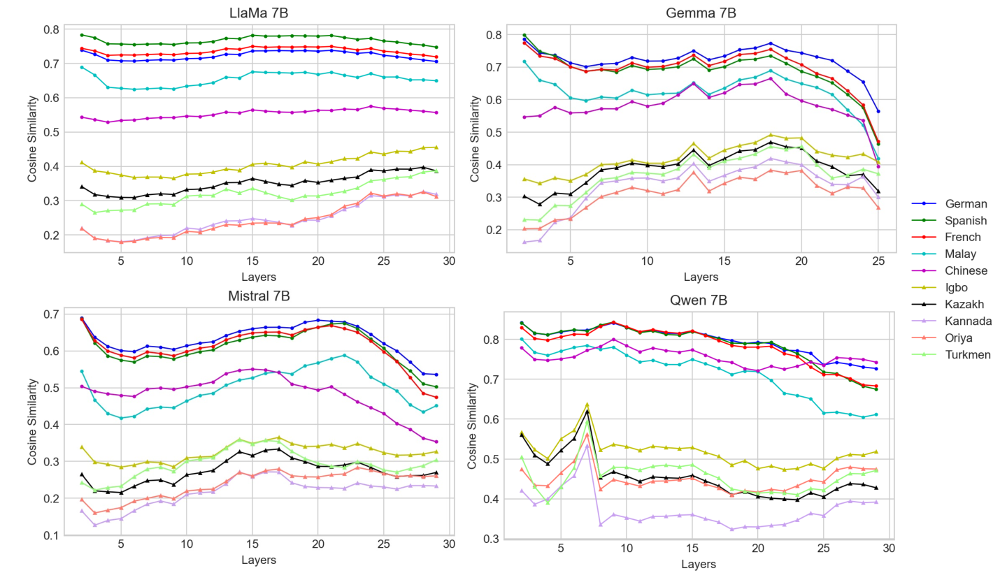
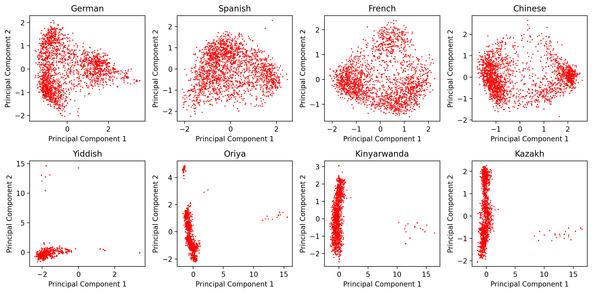

Language Ranker: A Metric for Quantifying LLM Performance
Across High and Low-Resource Languages
1 New Jersey Institute of Technology, 2 University of Georgia, 3 University of Minnesota at Twin Cities,
4 Wake Forest University, 5 Cisco Research
Overview
Large language models are trained on corpora that differ greatly in coverage across languages. This paper introduces Language Ranker, an intrinsic metric for comparing a model’s representations of a language with those of corresponding English text. The resulting scores provide a way to examine relative multilingual capability, including for languages with limited evaluation resources.
The method uses parallel sentences from OPUS-100. For each pair, it takes the last-token representations at selected transformer layers, computes cosine similarity between the target language and its English translation, and averages the similarities across layers. Languages are then ranked by this score.
Experiments with Llama 2, Llama 3, Qwen, Mistral, and Gemma show higher scores for many high-resource languages and lower scores for low-resource languages. The analysis also compares the scores with language shares in pre-training corpora and with downstream multilingual reasoning tasks. The similarity score is an indirect measure of capability; the paper reports these comparisons to support its interpretation.
Results
Figure 1 shows the similarity to English across model layers for Llama 2, Gemma, Mistral, and Qwen 7B. In these selected languages, the high-resource group generally scores above the low-resource group. The pattern appears across all four models, although individual languages and layers differ.

For Llama 2, the selected examples in Table 1 illustrate the relationship with pre-training data: German and French have similarity scores of 0.723 and 0.737, respectively, while Kannada and Urdu score 0.236 and 0.275. The paper reports their corresponding language shares as 0.17%, 0.16%, and at most 0.01% for Kannada and Urdu.
Why Language Ranker Is Meaningful
Figure 4 provides a view of the representation spaces behind these scores. In Gemma 7B, the four high-resource languages in the top row occupy broader regions of the projected space, while the four low-resource languages in the bottom row are concentrated in much narrower regions. This difference supports the paper’s interpretation that representation geometry reflects differences in language coverage. The projection offers qualitative evidence alongside the similarity scores and downstream evaluations.

BibTeX
@inproceedings{li2025language,
title = {Language Ranker: A Metric for Quantifying LLM Performance Across High and Low-Resource Languages},
author = {Li, Zihao and Shi, Yucheng and Liu, Zirui and Yang, Fan and Payani, Ali and Liu, Ninghao and Du, Mengnan},
booktitle = {Proceedings of the AAAI Conference on Artificial Intelligence},
volume = {39},
number = {27},
pages = {28186--28194},
year = {2025},
doi = {10.1609/aaai.v39i27.35038}
}